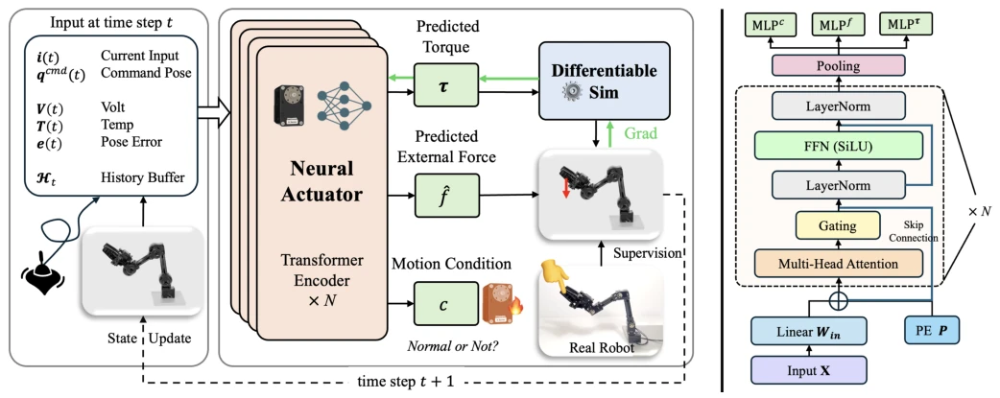
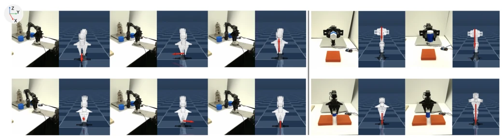
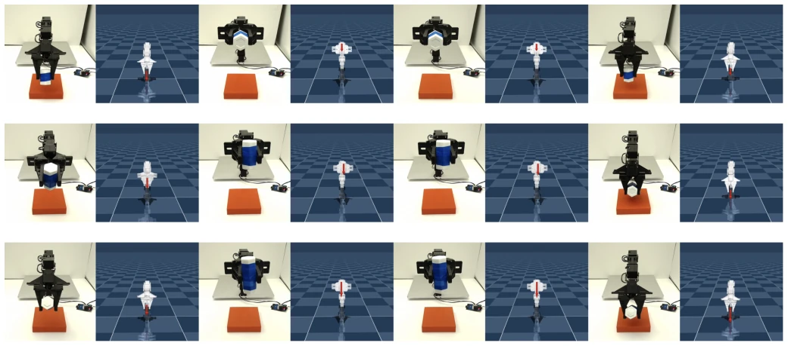
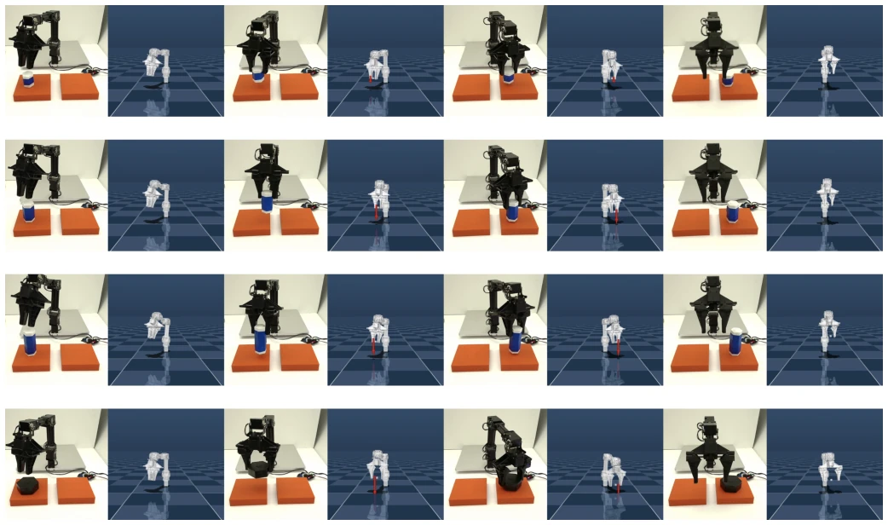
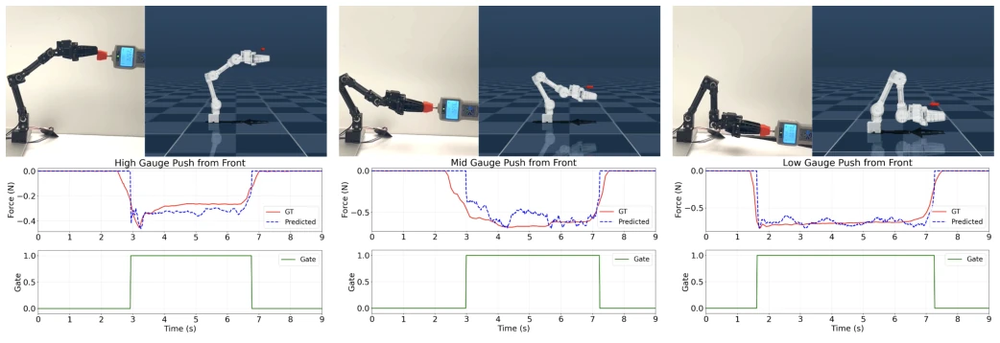
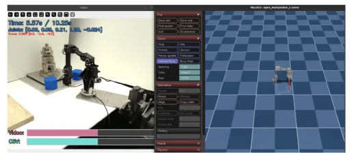
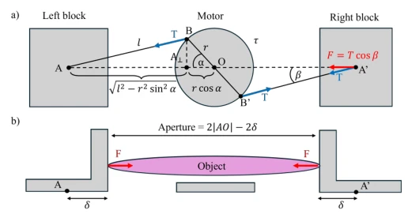
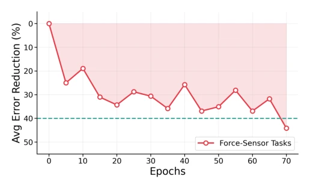
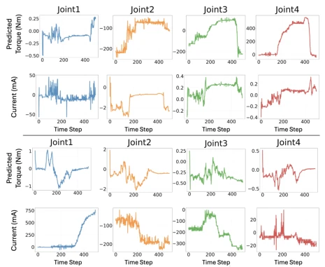
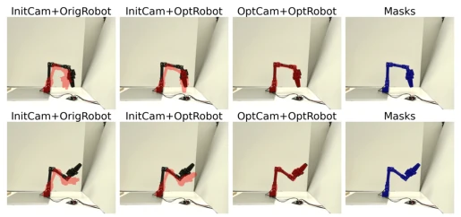

This paper equips low-cost robot servo motors with a 'neural muscle', attempting to solve the chronic issue of dynamics modeling in cheap hardware. The authors are quite candid, admitting that linear approximations like $ \tau = K_t I $ are a joke in the face of friction, hysteresis, and thermal drift, leading to huge sim-to-real transfer errors. NeuralActuator uses Transformer to capture temporal dependencies, training torque surrogates via backpropagation through differentiable simulation, rather than relying on expensive torque sensors. Although robots like Franka costing $30,000 are also used for benchmarking, the focus is still on the $500 OpenManipulator. However, this approach still relies on teleoperation for data collection, still a distance away from true 'zero-shot'. Force sensing adds no sensors, relies on guessing, guesses quite accurately, but small objects might still not be measured accurately. Overall, it is a practical engineering patch, not a theoretical breakthrough, but very valuable for low-cost embodied intelligence. It proves that on low-cost hardware, compensating for nonlinearity through data-driven methods can significantly improve control performance.
Differentiable simulation is very popular in policy learning, but actuator dynamics are often neglected. Low-cost platforms commonly use brushless DC or servos, hardware is simple but has many non-ideal characteristics, leading to large sim-to-real transfer errors. Existing methods either rely on joint torque sensing [25] or calibrated current-torque estimation [42], which is hard to obtain reliably on low-cost servos. Additionally, force sensing usually relies on high-quality force feedback [26, 14], which low-cost platforms lack. This paper aims to fill this gap, providing force sensing without dedicated force sensors and more accurate dynamics modeling. Especially for time-varying effects such as friction, hysteresis, backlash, and thermal drift, analytical modeling is difficult, and data-driven methods are more advantageous.

Fig. 3: NeuralActuator pipeline. At each time step t, NeuralActuator takes the commanded pose qcmd(t), an effort-related actuator signal u(t), actuator-side telemetry, and tracking feedback e(t), together with a history buffer Ht that summarizes recent commands, states, and telemetry (e.g., joint poses and velocities). A Transformer encoder (×N blocks) maps the sequence to four task heads: (i) a simulator- equivalent generalized-effort surrogate τ, termed the torque surrogate below, (ii) a raw external-force estimate ˆfraw, (iii) a contact-probability gate g, and (iv) a per-motor condition vector c. The gated force is ˆf = gˆfraw. Only the clipped predicted surrogate ¯τ is supplied to the differentiable simulator as its generalized control input; the simulator then advances the state to ti
方法Method
整体流程是 Transformer 编码器处理历史状态和指令。输入包括指令位置、本体感知、执行器遥测（电流、电压、温度）和跟踪误差。输出四个头：(1) 扭矩代理（用于仿真），(2) 原始外力，(3) 接触门控，(4) 电机状态。训练策略很巧妙：扭矩头通过可微仿真（Diff Sim）用位姿轨迹监督，无需直接力矩标签；力、门控和状态头用直接标签监督。数据来自 NAD 数据集，通过双臂遥操作收集。架构上用了多头自注意力捕捉时序依赖。具体而言，Torque-Surrogate 预测器输出仿真器等效广义努力，通过梯度下降优化位姿误差；Force Head 预测末端外力，结合 Contact Gate 过滤非接触时刻；Condition Head 区分电机正常与机械受限状态。损失函数包含位姿回归、力回归、门控分类和状态分类，通过 JAX 实现高效训练。
The overall process is a Transformer encoder processing historical states and commands. Inputs include command position, proprioception, actuator telemetry (current, voltage, temperature), and tracking error. Outputs four heads: (1) Torque surrogate (for simulation), (2) Raw external force, (3) Contact gate, (4) Motor state. Training strategy is clever: torque head supervised by pose trajectories via differentiable simulation (Diff Sim), no direct torque labels needed; Force, gate, and state heads supervised by direct labels. Data comes from the NAD dataset, collected via dual-arm teleoperation. Architecturally uses multi-head self-attention to capture temporal dependencies. Specifically, Torque-Surrogate predictor outputs simulator equivalent generalized effort, optimized via gradient descent on pose error; Force Head predicts end-effector external force, combined with Contact Gate to filter non-contact moments; Condition Head distinguishes motor normal and mechanically constrained states. Loss function includes pose regression, force regression, gate classification, and state classification, implemented for efficient training via JAX.

Fig. 5: Robot arm simulation with external force estimation on the test set. (a) NeuralActuator estimates end-effector external forces along six directions (±X, ±Y, ±Z); red arrows visualize the estimated force vectors in simulation (paired with corresponding real-robot executions). (b) Force estimation during force-aware manipulation: lifting and holding 200 g and 300 g payloads (top) and pick-and-place with 200 g and 300 g payloads (bottom). Additional examples are shown in the accompanying video.

Fig. 8: Force-aware lift-and-hold rollouts. From top to bottom: 200 g, 300 g, and 400 g payloads. Each row pairs the real execution with the simulated rollout and overlays the predicted end-effector external force.
实验Experiments
在三个平台测试：OpenManipulator-X, SO-101, Franka Panda。指标包括位姿 MAE、力 MAE、接触概率和电机状态分类。结果显示在低成本平台上轨迹预测准确，力估计误差低（如推力计实验 MAE 约 0.037N）。Franka 实验验证了负载力估计。还展示了作为预训练模块提升行为克隆性能。在线适应实验显示跟踪误差降低。数据集 NAD 包含自由运动、力标签交互和机械受限操作。实验覆盖了从 500 美元到 3 万美元的平台，验证了模型的泛化能力。
Tested on three platforms: OpenManipulator-X, SO-101, Franka Panda. Metrics include pose MAE, force MAE, contact probability, and motor state classification. Results show accurate trajectory prediction on low-cost platforms, low force estimation error (e.g., dynamometer experiment MAE about 0.037N). Franka experiment validates load force estimation. Also shown as a pre-trained module improving behavior cloning performance. Online adaptation experiment shows tracking error reduction. Dataset NAD includes free motion, force-labeled interaction, and mechanically constrained operation. Experiments cover platforms from $500 to $30,000, validating the model's generalization ability.

Fig. 7: Force-aware pick-and-place rollouts. From top to bottom: 200 g, 300 g, 400 g, and 500 g payloads. Each row pairs the real execution with the simulated rollout and overlays the predicted end-effector external force.

Fig. 9: Force prediction for front-direction gauge pushing. For high, middle, and low contact positions, we show the physical setup and simulated scene together with the measured and predicted signed contact-axis force. The bottom panels show the corresponding binary contact interval.
其他图片Other Figures

Fig. 4: Data verification in NAD. We time-synchronize the real-robot video (left) with the logged trajectory and verify alignment in a GUI (right), where the red arrow visualizes the estimated external force.

Fig. 6: Kinematics and force transmission of the symmetric gripper. Top (a) and side (b) views show the rotary motor driving two symmetric prismatic jaws. Each link transmits an axial force T, whose component along the closing direction gives the per-jaw force F = T cos β.

Fig. 11: Online adaptation progress. The curve-level aggre- gate shows approximately 44% average tracking-error reduc- tion after 70 epochs with 12 trajectories (7,810 frames). Fine- tuning takes 356 seconds in total (approximately 29.7 seconds per trajectory and 5.1 seconds per epoch).

Fig. 10: Measured motor current and raw torque-surrogate output for the arm joints. Two representative rollouts compare current with the pre-clipping network output. The bounded surrogate in Eq. 10 enters the simulator; the raw curves are diagnostic outputs rather than direct motor-torque measurements. At a 500-step rollout horizon, the average joint- angle and single-finger slide-coordinate MAEs are 1.26◦and 1 mm, respectively.

Fig. 14: Image-space refinement. The evaluated pipeline refines the hand–eye transform and NeuralActuator parameters through the simulated robot state; the visualization reports silhouette alignment.